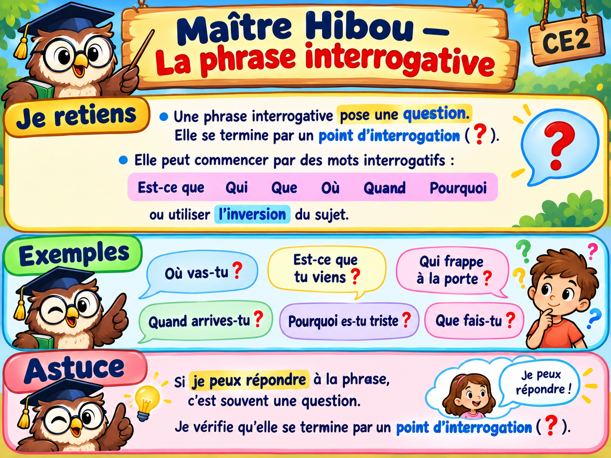

À toi de jouer !
10 questions interactives. Tu avances lorsque ta réponse est juste.
Bravo ! Tu as réussi les 10 questions.
Conseil de Maître Hibou : relis l’affiche en haut de la page si tu as un doute.

10 questions interactives. Tu avances lorsque ta réponse est juste.